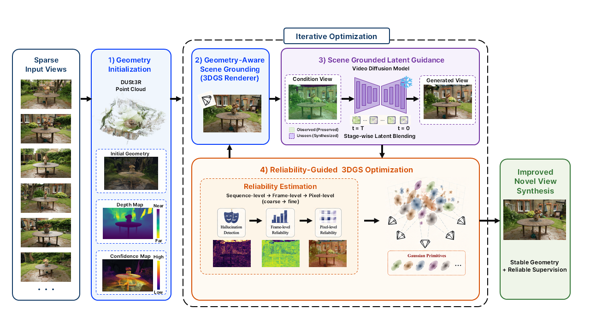

Novel view synthesis from a small number of input views is an important problem in various applications, including virtual and augmented reality, digital twins, robotics, and autonomous driving simulation. However, when the input views are sparse, Gaussian Splatting-based methods often struggle to reconstruct stable scene geometry. This problem becomes more severe in unbounded outdoor scenes, where limited view overlap and large unobserved regions lead to inaccurate depth estimation and floating artifacts. Recent studies address these limitations either by stabilizing geometry or by using diffusion-generated pseudo-views as additional supervision. However, geometry stabilization alone cannot sufficiently constrain unobserved regions, while generated pseudo-views may contain hallucinated or temporally inconsistent content. Using such generated views uniformly as supervision can therefore accumulate errors during optimization.
This research proposes a reliability-guided diffusion supervision method for controlling the uncertainty of generated pseudo-views in sparse-view 3D Gaussian Splatting. The proposed method combines depth-consistency regularization with reliability-guided pseudo-view supervision. It stabilizes the depth structure by regularizing the depth rendered at pseudo-view cameras toward the depth rendered by a pre-trained baseline 3D Gaussian model, mainly in observed regions. Dense-stereo geometry is used for point-cloud initialization and as a reliability prior. The supervision strength of generated views is then adjusted by combining hallucination detection, frame-level reliability, and pixel-level reliability. During diffusion sampling, latent-space blending preserves information in observed regions. In this way, generated pseudo-views are used as reliability-weighted cues for complementing unobserved regions, improving geometric stability under limited input views and reducing distortions caused by unreliable generated views.

GradeS consists of a four-stage pipeline for sparse-view 3D Gaussian Splatting. It first estimates an initial geometry from sparse input views, providing point clouds, depth cues, and confidence information as the basis for reconstruction. The method then stabilizes the 3DGS renderer through geometry-aware scene grounding, using rendered RGB, depth, and confidence maps as reliable conditioning signals.
During video diffusion generation, scene-grounded latent guidance preserves known regions while allowing unseen regions to be synthesized. The generated pseudo-views are then used for 3DGS optimization, but not as direct ground truth. Instead, they are selected and weighted based on hallucination detection, frame reliability, pixel uncertainty, and geometry regularization. This reliability-guided supervision reduces the impact of hallucinated content and enables more stable novel view synthesis from sparse inputs.
PSNR ↑, SSIM ↑, and LPIPS ↓ on held-out test views (9 input views). Methods are grouped into Without Diffusion (Baseline, Our Baseline) and With Diffusion (GuidedVD, Ours). Best per metric is in bold.
| Dataset | Scene | Without Diffusion | With Diffusion | ||||||||||
|---|---|---|---|---|---|---|---|---|---|---|---|---|---|
| Baseline (FSGS, ECCV 2024) |
Our Baseline | GuidedVD (CVPR 2025) |
Ours | ||||||||||
| PSNR↑ | SSIM↑ | LPIPS↓ | PSNR↑ | SSIM↑ | LPIPS↓ | PSNR↑ | SSIM↑ | LPIPS↓ | PSNR↑ | SSIM↑ | LPIPS↓ | ||
| Mip-NeRF 360 | Garden | 17.51 | 0.378 | 0.438 | 18.58 | 0.422 | 0.445 | 18.95 | 0.425 | 0.437 | 19.00 | 0.450 | 0.419 |
| Bicycle | 15.44 | 0.262 | 0.528 | 17.23 | 0.342 | 0.496 | 17.51 | 0.339 | 0.507 | 17.74 | 0.354 | 0.480 | |
| Stump | 16.78 | 0.287 | 0.532 | 17.67 | 0.342 | 0.524 | 17.89 | 0.354 | 0.530 | 17.98 | 0.370 | 0.518 | |
| Flowers | 12.62 | 0.195 | 0.629 | 13.13 | 0.218 | 0.613 | 13.69 | 0.224 | 0.596 | 13.72 | 0.227 | 0.591 | |
| Tanks & Temples | Truck | 14.80 | 0.502 | 0.402 | 15.15 | 0.541 | 0.398 | 16.44 | 0.551 | 0.399 | 16.50 | 0.559 | 0.384 |
| Barn | 14.14 | 0.457 | 0.530 | 14.44 | 0.464 | 0.511 | 14.40 | 0.474 | 0.516 | 14.45 | 0.479 | 0.507 | |
| Train | 13.78 | 0.478 | 0.456 | 13.95 | 0.504 | 0.458 | 14.28 | 0.492 | 0.470 | 14.32 | 0.508 | 0.453 | |
| Caterpillar | 12.73 | 0.312 | 0.558 | 13.28 | 0.348 | 0.564 | 13.53 | 0.354 | 0.554 | 13.59 | 0.355 | 0.550 | |
| Ignatius | 11.45 | 0.243 | 0.588 | 11.94 | 0.279 | 0.606 | 12.17 | 0.284 | 0.587 | 12.21 | 0.284 | 0.585 | |
360° orbit renderings from 9 input views. Drag each slider to compare; same camera trajectory throughout. Per scene: left = Baseline vs. Our Baseline (geometry), right = GuidedVD vs. Ours.
Baseline vs. Our Baseline
GuidedVD vs. Ours
Baseline vs. Our Baseline
GuidedVD vs. Ours
360° orbit renderings from 9 input views. Drag the slider to compare; same camera trajectory throughout.
GuidedVD vs. Ours
@article{grades,
title = {GradeS: Geometry-Aware Reliability-Guided Diffusion Supervision for Sparse-View 3D Gaussian Splatting},
author = {Choi, Eunhye},
year = {2026}
}